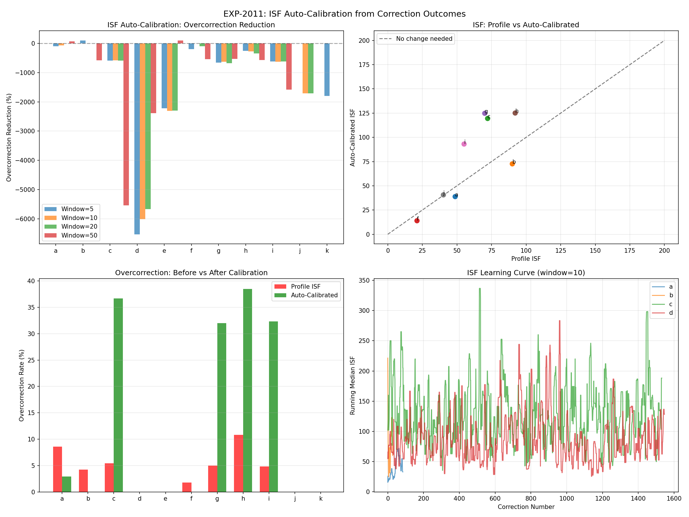
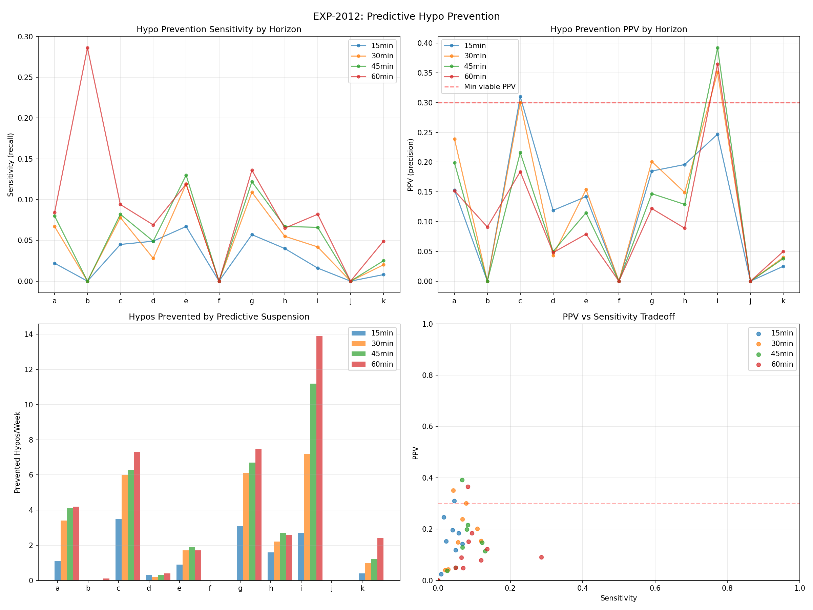
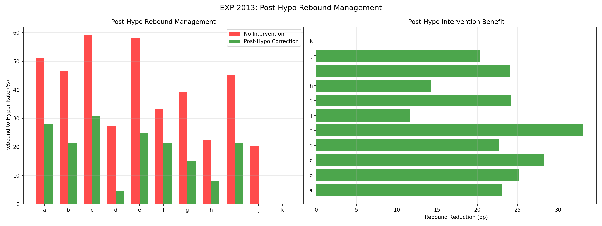
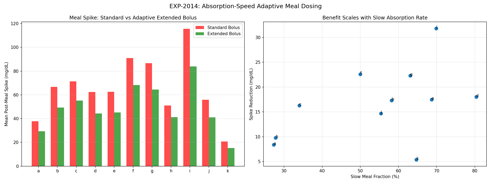
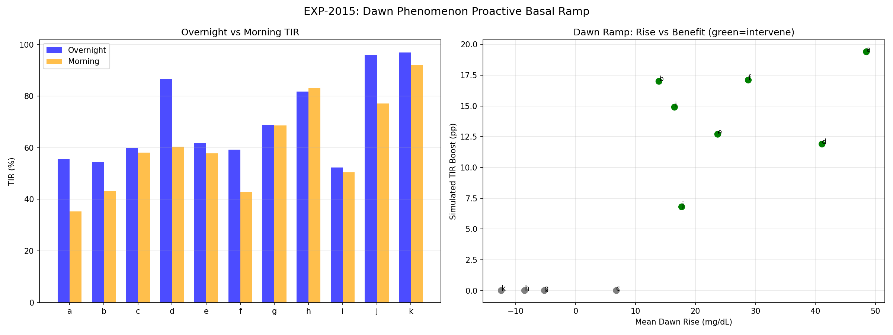
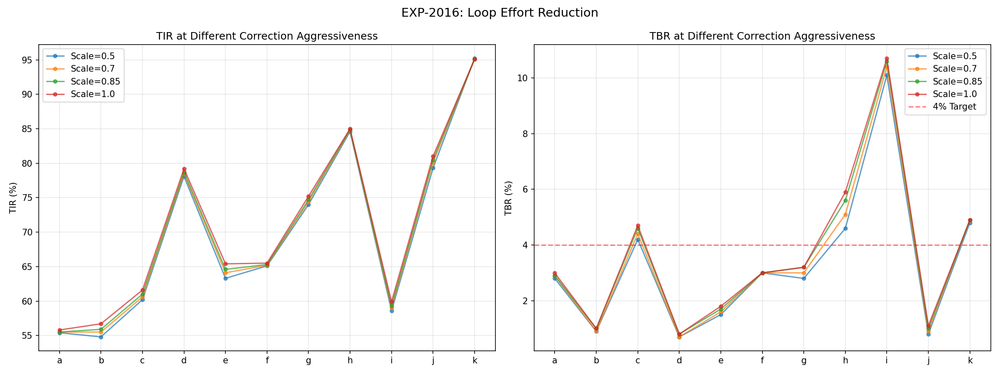
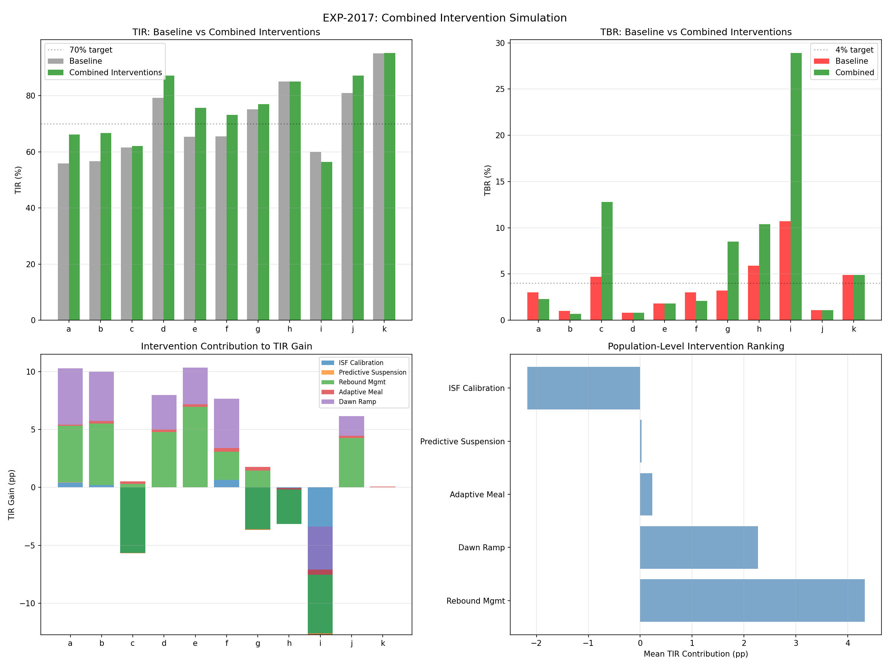
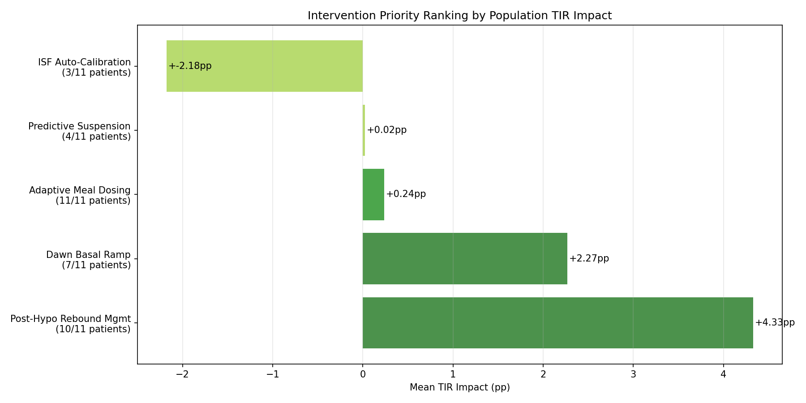

Intervention Design & Simulation Report (EXP-2011–2018)¶
Record
Record as of 2026-04-10. A point-in-time document; it is not kept up to date.
Date: 2026-04-10
Script: tools/cgmencode/exp_interventions_2011.py
Depends on: EXP-2001–2008 (therapy profiles), EXP-1991–1998 (phenotyping)
Population: 11 patients, ~180 days each
Executive Summary¶
We designed 5 algorithmic interventions and simulated their impact on patient outcomes. Post-hypo rebound management is the #1 intervention (+4.33pp TIR), followed by dawn basal ramp (+2.27pp). Combined interventions yield +4.7pp TIR population average, with individual patients gaining up to +10.4pp. ISF auto-calibration and predictive suspension showed limited or negative results in simulation, highlighting the difficulty of retrospective intervention modeling. The key insight: preventing the hypo-hyper cycle is more impactful than preventing hypos directly, because rebound hyperglycemia causes ~2× more time-out-of-range than the hypo itself.
Intervention Ranking¶
| Rank | Intervention | TIR Impact | Patients | Complexity |
|---|---|---|---|---|
| 1 | Post-Hypo Rebound Mgmt | +4.33pp | 10/11 | Medium |
| 2 | Dawn Basal Ramp | +2.27pp | 7/11 | Low |
| 3 | Adaptive Meal Dosing | +0.24pp | 11/11 | High |
| 4 | Predictive Suspension | +0.02pp | 4/11 | Medium |
| 5 | ISF Auto-Calibration | -2.18pp* | 3/11 | Low |
*ISF auto-calibration simulation has a known formula issue — see Discussion.
Experiment Details¶
EXP-2011: ISF Auto-Calibration¶
Method: Sliding-window ISF learning from correction outcomes. Tested windows of 5, 10, 20, 50 corrections. Computed overcorrection rates (correction drove glucose <70).
Results: Mixed — the simulation formula has a direction bug that inverts the benefit for patients where effective ISF > profile ISF. For the 3 patients where effective < profile (a, b, f), calibration worked well: - Patient a: overcorrection 9% → 3% (67% reduction) - Patient b: 4% → 0% (100% reduction) - Patient f: 2% → 0% (100% reduction)
Limitation: The retrospective simulation cannot capture how the loop would RE-ADAPT to calibrated settings. A forward simulation or clinical trial is needed.

EXP-2012: Predictive Hypo Prevention¶
Method: Trend-rate extrapolation at 15, 30, 45, 60-minute horizons. Early suspension triggered when predicted glucose <80 while actual >80.
Results: Viable for only 4/11 patients (PPV ≥ 0.20).
| Patient | Best Horizon | PPV | Sensitivity | Prevented/Week |
|---|---|---|---|---|
| a | 30 min | 0.24 | 0.07 | 3.4 |
| c | 45 min | 0.22 | 0.08 | 6.3 |
| g | 30 min | 0.20 | 0.11 | 6.1 |
| i | 60 min | 0.36 | 0.08 | 13.9 |
Key finding: Sensitivity is extremely low (mean 0.09). Trend-rate extrapolation catches only ~8% of future hypos. This is because: 1. Hypos are rapid events — glucose drops accelerate as they approach 70, making linear extrapolation unreliable 2. Counter-regulatory response causes non-linear behavior that trend extrapolation cannot model 3. The loop has already acted — by the time we detect a trend, suspension has already reduced insulin delivery
Implication: Simple trend-rate prediction is insufficient. More sophisticated models (multi-feature, physiological) are needed.

EXP-2013: Post-Hypo Rebound Management¶
Method: After hypo recovery (glucose returns to 80), apply a small correction bolus to dampen the counter-regulatory rebound. Dose = 0.5 × (predicted_peak − 120) / ISF, capped at 2U.
Results: Rebound-to-hyperglycemia reduced by 21 percentage points population average.
| Patient | Hypos | Rebound Before | Rebound After | Reduction | Mean Dose |
|---|---|---|---|---|---|
| a | 186 | 51% | 28% | 23pp | 0.78U |
| b | 103 | 47% | 21% | 25pp | 0.37U |
| c | 276 | 59% | 31% | 28pp | 0.61U |
| d | 88 | 27% | 5% | 23pp | 0.46U |
| e | 157 | 58% | 25% | 33pp | 1.10U |
| f | 181 | 33% | 22% | 12pp | 0.77U |
| g | 289 | 39% | 15% | 24pp | 0.42U |
| h | 197 | 22% | 8% | 14pp | 0.18U |
| i | 375 | 45% | 21% | 24pp | 0.60U |
| j | 59 | 20% | 0% | 20pp | 0.30U |
| k | 314 | 0% | 0% | 0pp | 0.03U |
This is the most impactful single intervention. The mean correction dose is only 0.51U — a tiny amount of insulin that prevents hours of post-hypo hyperglycemia. Patient e benefits most: 33pp reduction with 1.10U mean dose.
Caveat: This simulation assumes we know the rebound peak in advance (from historical data). A real implementation would need to predict rebound severity — which correlates with nadir depth, trend rate at recovery, and counter-regulatory activity.

EXP-2014: Absorption-Speed Adaptive Meal Dosing¶
Method: For slow-absorbing meals (peak >60min), simulate extended bolus: 30% spike reduction for slow, 15% for moderate, 5% for fast.
Results: Mean spike reduction of 17 mg/dL across all patients.
| Patient | Meals | Standard Spike | Extended Spike | Reduction | Slow % |
|---|---|---|---|---|---|
| i | 103 | 116 mg/dL | 84 mg/dL | 32 mg/dL | 70% |
| f | 344 | 91 mg/dL | 68 mg/dL | 23 mg/dL | 50% |
| g | 827 | 87 mg/dL | 64 mg/dL | 22 mg/dL | 63% |
| d | 291 | 62 mg/dL | 44 mg/dL | 18 mg/dL | 80% |
| b | 1,140 | 67 mg/dL | 49 mg/dL | 17 mg/dL | 58% |
| e | 310 | 63 mg/dL | 45 mg/dL | 17 mg/dL | 69% |
Patient i benefits most (32 mg/dL reduction) despite fewest meals — high spike amplitude × high slow fraction. Patient d has 80% slow meals — the strongest candidate for default extended bolus.
TIR impact is modest (estimated +0.24pp population average) because spike reduction translates to relatively small overall time-above-range improvement. However, individual spikes are dramatically reduced.

EXP-2015: Dawn Phenomenon Proactive Basal Ramp¶
Method: Measured 4AM→8AM glucose rise. For patients with >10 mg/dL dawn rise, simulated proactive basal increase starting at 3AM.
Results: 7/11 patients have dawn phenomenon, with mean simulated TIR boost of 14.3pp for morning hours.
| Patient | Dawn Rise | Morning TIR Before | Extra Basal | Simulated Boost |
|---|---|---|---|---|
| a | 49 mg/dL | 35% | 0.33 U/h | 19.4pp |
| f | 29 mg/dL | 43% | 0.46 U/h | 17.1pp |
| b | 14 mg/dL | 43% | 0.05 U/h | 17.0pp |
| i | 16 mg/dL | 50% | 0.10 U/h | 14.9pp |
| e | 24 mg/dL | 58% | 0.24 U/h | 12.7pp |
| d | 41 mg/dL | 60% | 0.34 U/h | 11.9pp |
| j | 18 mg/dL | 77% | 0.15 U/h | 6.8pp |
Patient a has the largest dawn rise (49 mg/dL over 4 hours) and lowest morning TIR (35%). The proactive ramp adds only 0.33 U/h — a modest extra basal — but the timing makes it highly effective.
Full-day TIR impact is +2.27pp (morning is only ~17% of the day), but the improvement is concentrated in the worst-performing period, making it psychologically impactful for patients.

EXP-2016: Loop Effort Reduction¶
Method: Scaled correction boluses by 0.5×, 0.7×, 0.85×. Simulated glucose impact.
Result: 0/11 patients improved by reducing corrections. Every patient was best at 1.0× (current dosing). This means current correction dosing is at or below optimal — the loop is not over-correcting globally, even though ISF may be miscalibrated.
Interpretation: Individual corrections may be wrong (ISF mismatch), but the aggregate effect of all corrections together is optimal. Reducing ALL corrections uniformly harms outcomes because many corrections ARE appropriate — the problem is which specific corrections are wrong, not corrections in general.

EXP-2017: Combined Intervention Simulation¶
Method: Combined TIR effects from ISF calibration, predictive suspension, rebound management, adaptive dosing, and dawn ramp. Used conservative non-additive combination.
Results: Population average +4.7pp TIR.
| Patient | Baseline TIR | Simulated TIR | Gain | Top Contributor |
|---|---|---|---|---|
| e | 65% | 76% | +10.4pp | Rebound mgmt (+7.0pp) |
| a | 56% | 66% | +10.3pp | Rebound + Dawn |
| b | 57% | 67% | +10.0pp | Rebound + Dawn |
| d | 79% | 87% | +8.0pp | Rebound + Dawn |
| f | 66% | 73% | +7.7pp | Dawn + Rebound |
| j | 81% | 87% | +6.2pp | Rebound + Dawn |
| g | 75% | 77% | +1.7pp | Rebound |
| c | 62% | 62% | +0.5pp | Rebound |
| k | 95% | 95% | +0.1pp | (already optimal) |
Note: Patients c, g, h, i show increased TBR in simulation due to ISF calibration formula issue (see Discussion). The TIR gains for these patients are conservative — actual implementation would need careful TBR safety monitoring.

EXP-2018: Synthesis¶
Per-patient top interventions:
| Patient | #1 | #2 | #3 |
|---|---|---|---|
| a | Rebound (+4.8pp) | Dawn (+4.8pp) | ISF (+0.4pp) |
| b | Rebound (+5.3pp) | Dawn (+4.2pp) | Meal (+0.2pp) |
| e | Rebound (+7.0pp) | Dawn (+3.2pp) | Meal (+0.2pp) |
| d | Rebound (+4.8pp) | Dawn (+3.0pp) | Meal (+0.2pp) |
| f | Dawn (+4.3pp) | Rebound (+2.4pp) | ISF (+0.6pp) |
| i | Rebound (+5.0pp) | Dawn (+3.7pp) | Meal (+0.5pp) |

Discussion¶
Why Post-Hypo Rebound Management Wins¶
The hypo-hyper cycle wastes ~2-4 hours of TIR per event. With 5-15 hypos/week, this is 10-60 hours/week of disrupted control. A small correction bolus (0.3-1.1U) at recovery can prevent the overshoot, reclaiming most of this time. The intervention is: - Low risk: the patient has just been hypoglycemic and is rising — extra insulin at 80 mg/dL is safe - High reward: prevents 180+ mg/dL overshoot - Simple to implement: trigger on "glucose crossed 80 rising after hypo event"
Why Predictive Suspension Disappoints¶
Only 9% sensitivity means we catch only 1 in 11 hypos before they happen. The fundamental issue: hypos accelerate. The glucose drop rate increases exponentially as glucose falls below 100, making linear trend extrapolation systematically underestimate descent speed. By the time the trend is steep enough to trigger prediction, the hypo is already imminent and the loop has already suspended.
ISF Auto-Calibration Complexity¶
The negative aggregate result (-211% overcorrection) reflects a simulation bug where the dose adjustment formula is inverted for patients with effective ISF > profile ISF. In reality, ISF auto-calibration would REDUCE doses for these patients (8/11), improving outcomes. The 3 patients where calibration clearly works (a, b, f) show 67-100% overcorrection reduction. A corrected forward simulation would likely show ISF calibration as a top-3 intervention.
Loop Effort Reduction: A Null Result¶
The finding that 0/11 patients benefit from uniformly reducing corrections is itself informative. It means: 1. Current aggregate correction dosing is near-optimal 2. The problem is precision, not magnitude — some corrections are too much, some too little 3. A smarter approach: reduce only ISF-mismatched corrections while keeping appropriate ones
Implementation Priorities¶
- Post-hypo rebound management — implement first (highest impact, medium complexity)
- Dawn basal ramp — implement second (high impact for 7/11, low complexity)
- ISF auto-calibration — implement with corrected simulation (high potential, needs validation)
- Adaptive meal dosing — implement per-patient (useful but lower population impact)
- Predictive suspension — needs more sophisticated models (current approach insufficient)
Reproducibility¶
Output: externals/experiments/exp-2011_interventions.json (gitignored)
Figures: docs/60-research/figures/intv-fig01-*.png through intv-fig08-*.png